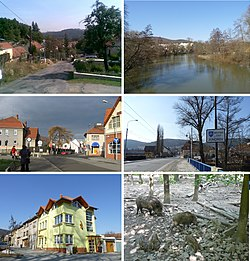

Brno-Jundrov
Brno-Jundrov je městská část na západě statutárního města Brna.
Je tvořena většinou katastrálního území čtvrtě Jundrov a
malou severozápadní částí katastrálního území Pisárky.
Celková katastrální výměra činí 4,22 km².
Samosprávná městská část vznikla 24. listopadu 1990.
Žije zde přibližně 4100 obyvatel.

Video průvodce - youtube
Zpět
Ostatní stránky:
- Brno - Královo Pole
- Brno - Bosonohy
- Brno - Žebětín
- Brno - Útěchov
- Brno - Chrlice
- Brno - Ivanovice
- Brno - Starý Lískovec